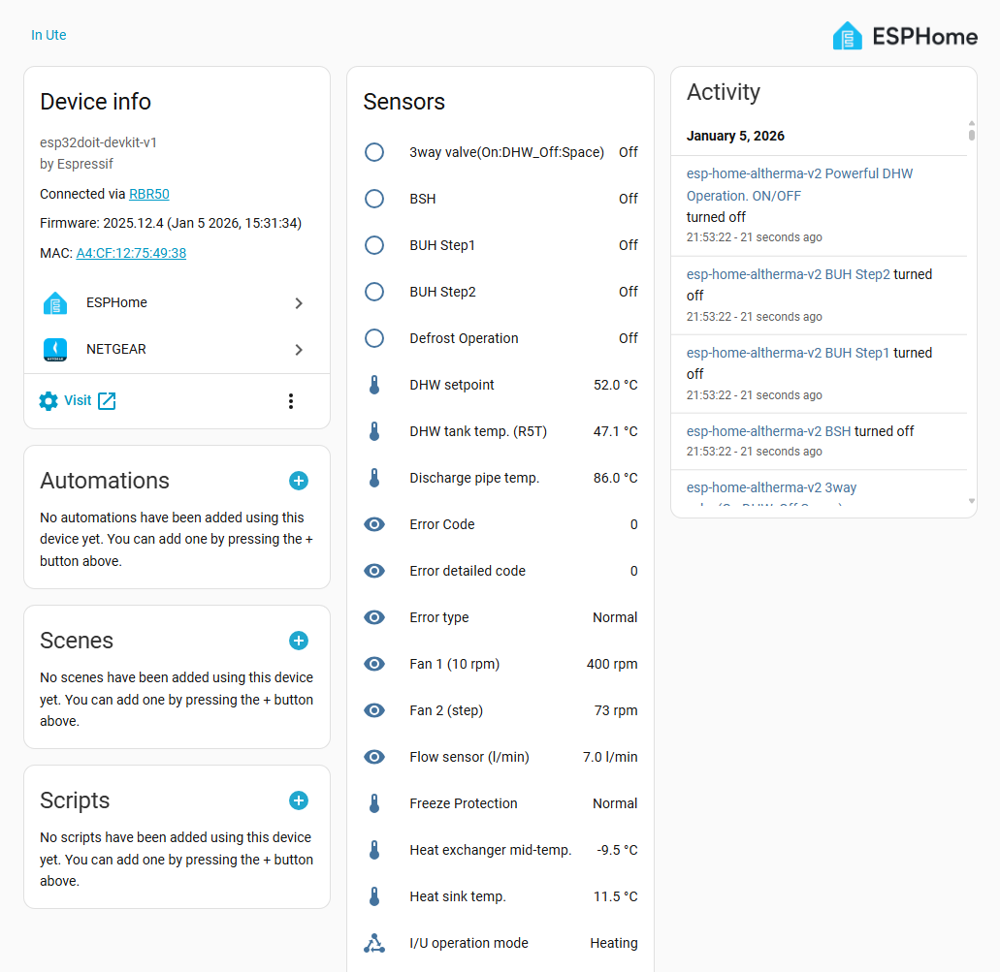
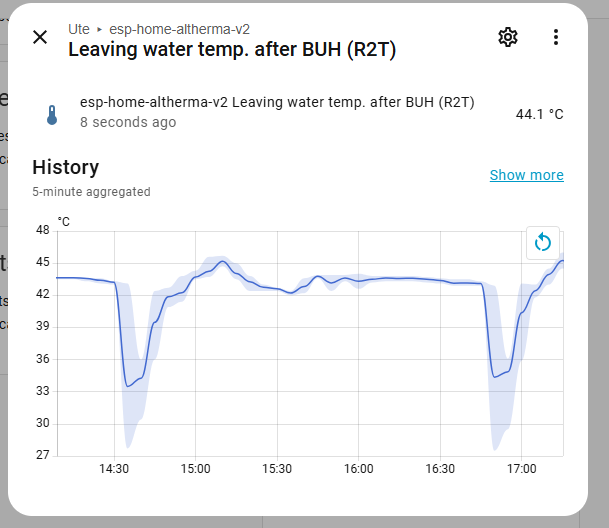

ESPHome Altherma - Monitor your Daikin Altherma 3 heat pump via X10A
I’ve been running a custom ESPHome implementation for my Daikin Altherma heat pump since 2022, and I finally got around to doing a proper rewrite. The result is ESPHome Altherma - a native ESPHome custom component that monitors your Daikin Altherma 3 heat pump via the X10A connector and integrates directly with Home Assistant.
Inspired by ESPAltherma, but built as a proper ESPHome component - so you get OTA updates, auto-discovery, and all the other ESPHome goodness out of the box.


Features
- Browser-based installation - flash directly from your browser via ESP Web Tools, no coding required
- Temperature monitoring - outdoor air, discharge pipe, heat exchanger, leaving water, inlet water, DHW tank, etc.
- Electrical sensors - inverter current, voltage
- Operational data - compressor frequency, fan speeds, flow rate, water pressure, pump signal
- Binary sensors - defrost status, thermostat ON/OFF, silent mode, freeze protection, 3-way valve, BUH steps
- Diagnostics - operation mode, error codes and sub-codes
- Multiple board support - ESP32, ESP32-S3, M5Stack AtomS3 Lite
- Model-specific configs - modular YAML files per heat pump model
- Mock UART mode - for development/testing without hardware
- OTA updates - with automatic update checking via GitHub releases
Hardware
Any ESP32 board with a UART will work. I’ve tested with:
| Board | YAML Config | UART RX Pin | UART TX Pin |
|---|---|---|---|
| ESP32 DevKit | esphome-altherma-esp32.yaml |
GPIO 16 | GPIO 17 |
| ESP32-S3 DevKit | esphome-altherma-esp32-s3.yaml |
GPIO 2 | GPIO 1 |
| M5Stack AtomS3 Lite | esphome-altherma-atoms3.yaml |
GPIO 2 (G1) | GPIO 1 (G2) |
Further Reading
- GitHub: github.com/jjohnsen/esphome-altherma
- Web installer: jjohnsen.github.io/esphome-altherma